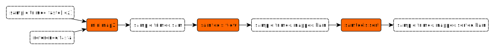
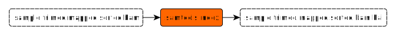
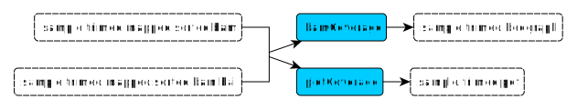

Read mapping
Mapping

minimap2
- Input:
- Fastq || fastq.gz file (trimed reads)
→ provided byseqkit seqrule - Fasta file (reference)
- Fastq || fastq.gz file (trimed reads)
- Output:
- Description:
Mapped the reads on the reference provided. - Default options:
--MD→ output the MD tag-a→ choose SAM as output format-x map-ont→ choose Nanopore vs reference mapping
samtools view
- Input:
- SAM file (mapping)
→ provided byminimap2rule
- SAM file (mapping)
- Output:
- BAM file (mapped reads)
→ used bysamtools sortrule
- BAM file (mapped reads)
- Description:
Convert the mapping file in binary format et remove unmapped reads - Default options:
-b→ convert output in BAM format-h→ include header-S→ input format is auto-detected-F 4→ exclude flags 4 (unmapped reads)
samtools sort
- Input:
- BAM file (mapped reads)
→ provided bysamtools viewrule
- BAM file (mapped reads)
- Output:
- Description:
Sort mapped reads - Default options:
-l 9→ set compression to best level
Indexing

samtools index
- Input:
- BAM file (mapped & sorted reads)
→ provided bysamtools sortrule
- BAM file (mapped & sorted reads)
- Output:
- Description:
Create a index of the mapped & sorted BAM file
Statistic control
samtools flagstat
- Input:
- SAM file (mapping)
→ provided byminimap2rule
- SAM file (mapping)
- Output:
- flagstat file
- Description:
Compute the mapping statistics

bamCoverage
- Input:
- Output:
- bedgraph file (coverage file)
- Description:
Compute the bedgraph of the sample mapping - Default options:
--normalizeUsing RPGC→ Choose the RPGC method to normalize number of reads per bin-of bedgraph→ Choose bedgraph as output file type
plotCoverage
- Input:
- Output:
- PDF file (depth plot)
- Description:
Create the plot of the coverage for the sample mapping. - Default options:
--smartLabels→ use file name as labels--plotFileFormat pdf→ choose pdf as output format